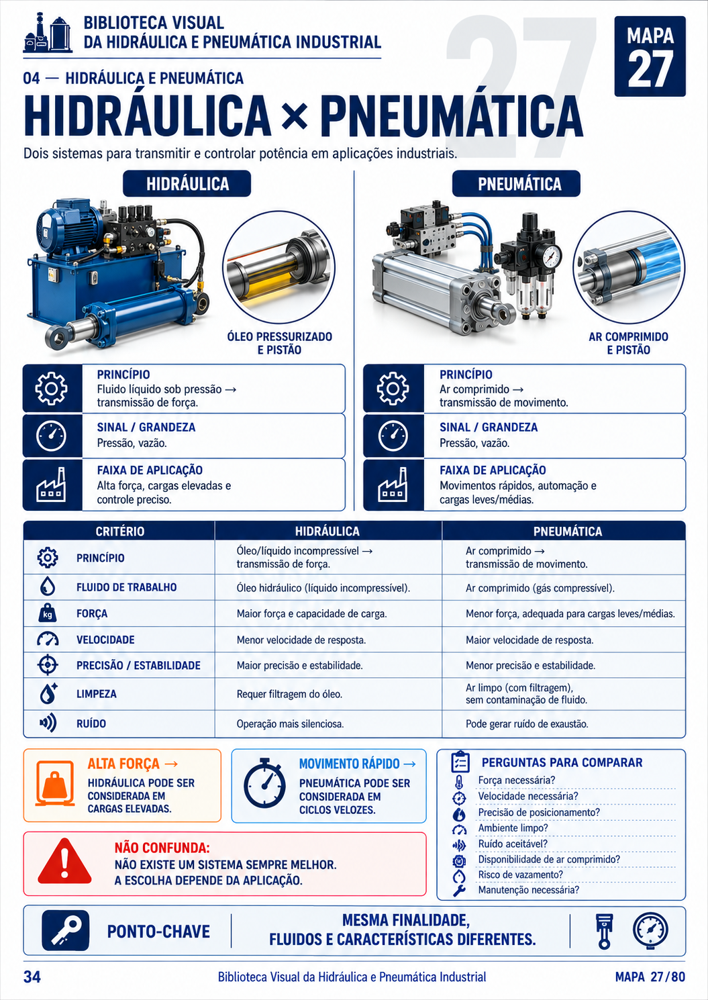
Reunimos bombas, cilindros, válvulas, atuadores, compressores e circuitos em
100 mapas visuais fáceis de consultar.
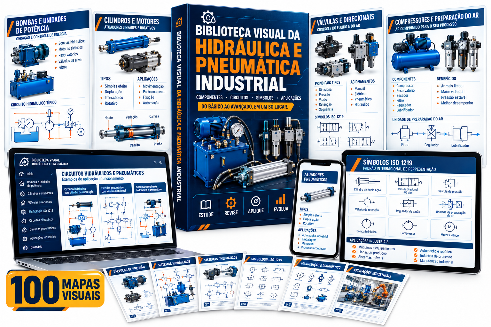
Conheça algumas páginas reais da Biblioteca Visual antes de escolher seu plano.

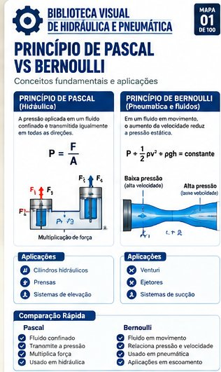
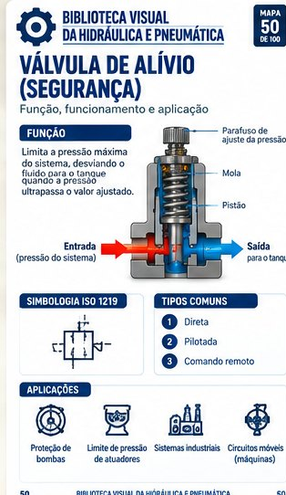
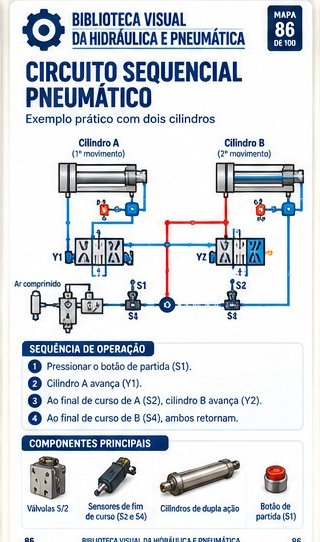
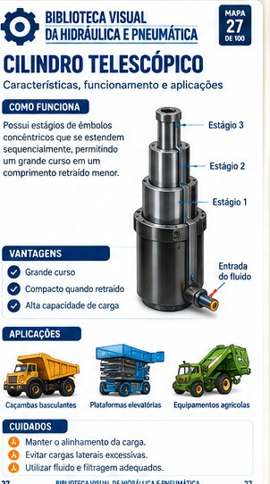
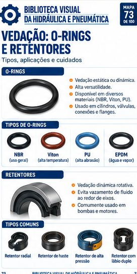
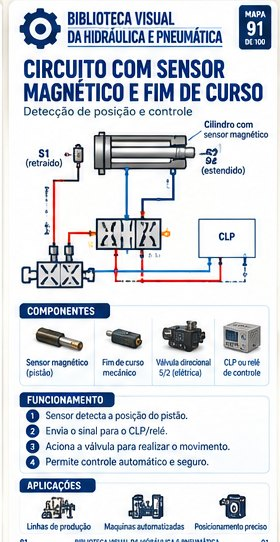
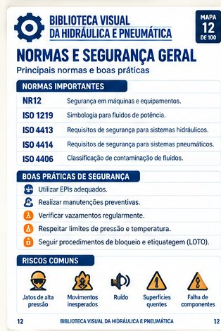
Você não precisa imaginar o que vai
receber. Está vendo o material por dentro.
Hidráulica e Pneumática envolvem circuitos complexos, válvulas, atuadores, símbolos ISO e
diferentes diagramas.
Quando essas informações estão espalhadas em apostilas confusas e esquemas ruins,
até uma simples revisão pode consumir mais tempo do que deveria.
Cada assunto em um arquivo, em uma pasta, em um lugar diferente.
Textos longos que escondem o essencial.
Você vê o esquema, mas não sabe o que cada símbolo significa.
Imagens borradas, cortadas ou difíceis de interpretar.
A rotina é corrida e o estudo precisa ser direto ao ponto.
Sem um resumo visual, revisar circuitos e falhas toma horas.
Cada mapa segue o mesmo padrão. Você encontra o que precisa rápido.
Conceitos explicados sem enrolação, em blocos curtos e fáceis de ler.
Símbolos ISO 1219 apresentados e explicados para facilitar a leitura.
Esquemas desenhados para entender facilmente o caminho do fluido e do ar.
Pontos de verificação e falhas comuns para o seu dia a dia.
PDFs rápidos e legíveis no celular para ajudar nas manutenções.
Uma biblioteca criada para facilitar a localização dos principais conteúdos de
Hidráulica e Pneumática.
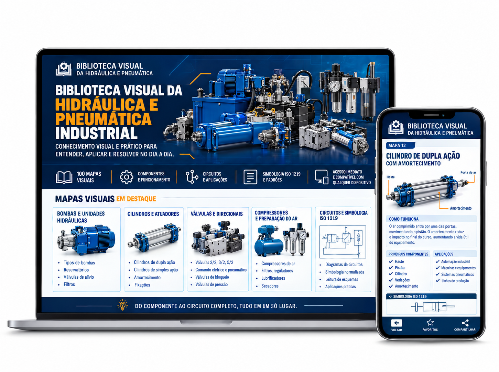
Cada mapa concentra um assunto e organiza as informações através de diagramas, componentes,
circuitos, tabelas e explicações curtas.
Entenda cada conceito com apoio visual.
Releia os pontos-chave em poucos minutos.
Abra no celular, no trabalho ou na bancada.
Leve os mapas em papel para a oficina.
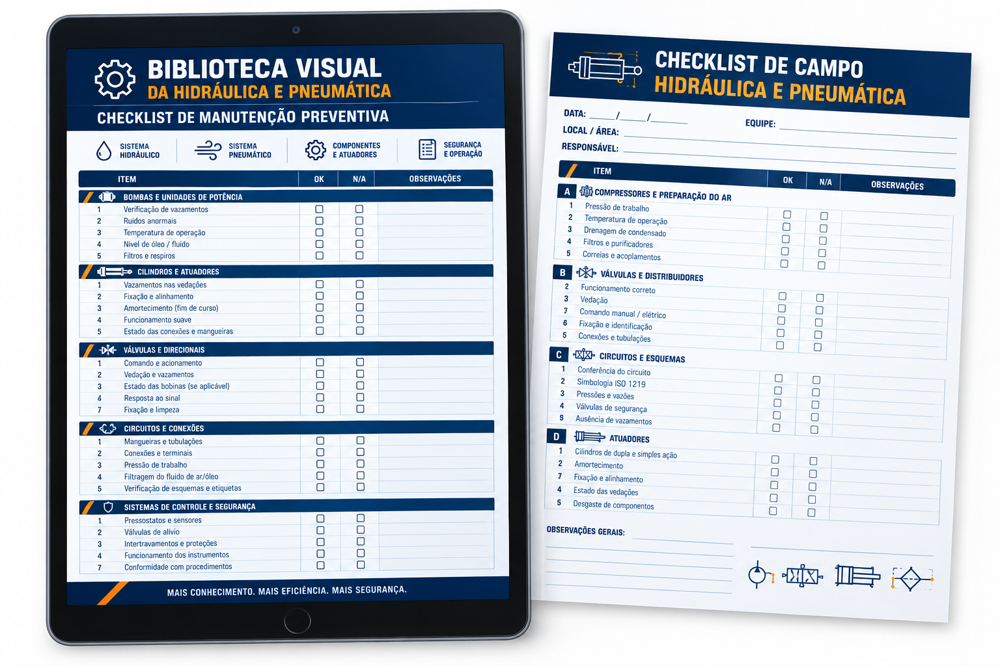
Conferir
Saiba o que observar.
Material visual para identificar de forma rápida os símbolos padrão de válvulas, bombas, cilindros e conexões em diagramas.
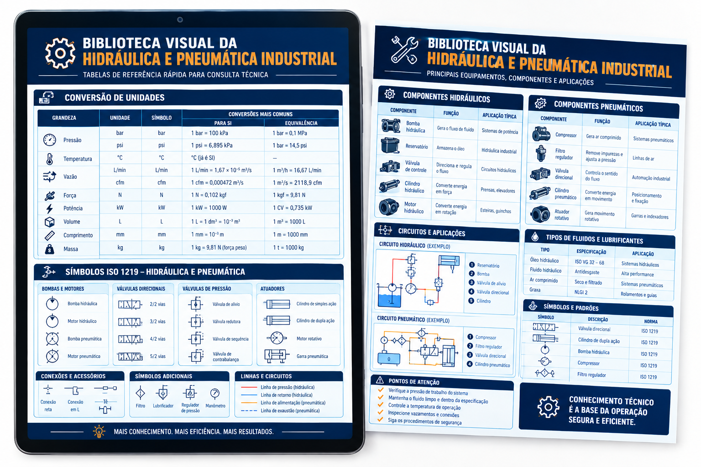
Consultar
Tenha as principais referências à mão.
Referências rápidas sobre graus de viscosidade, micragem de filtros e compatibilidade para não errar na hora da troca.
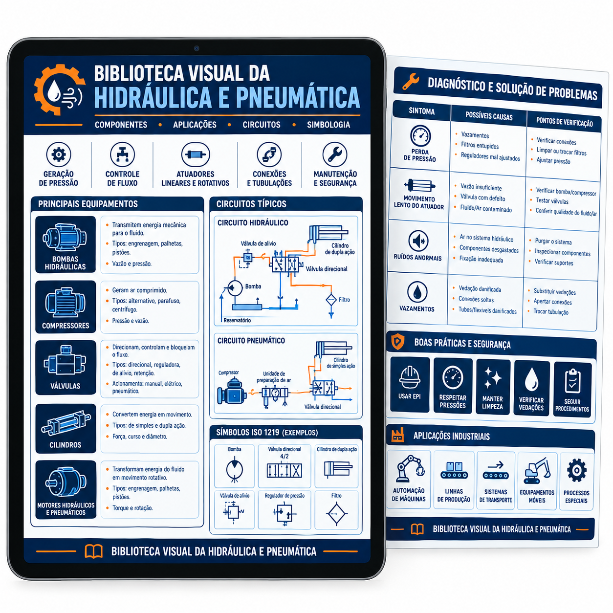
Investigar
Organize seu raciocínio diante de uma falha.
Um guia visual estruturado para relacionar ruídos, quedas de pressão e vazamentos com as possíveis causas.
Todos os 3 materiais complementares estão inclusos no plano Completo
QUERO ADQUIRIR O MATERIALSOMENTE OS 100 MAPAS VISUAIS
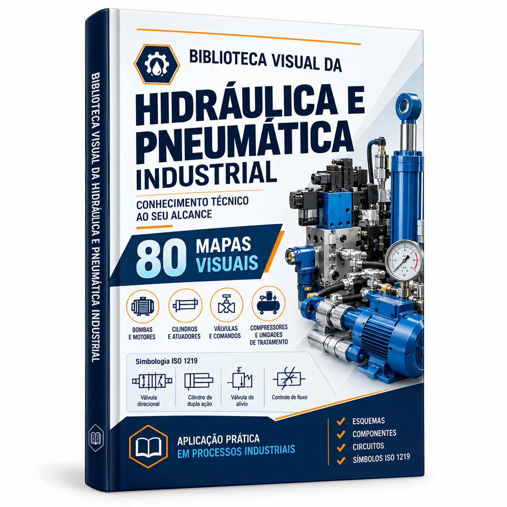
Pagamento único
100 MAPAS + 3 MATERIAIS COMPLEMENTARES
Pagamento único
Conheça a Biblioteca Visual por dentro com a segurança do período de garantia da oferta.
Compra protegida e processada em ambiente seguro de checkout.
É uma coleção digital com 100 Mapas Visuais organizando conceitos importantes de Hidráulica e Pneumática Industrial para estudo, revisão e consulta.
Tanto o Plano Básico quanto o Plano Completo incluem os 100 Mapas Visuais da Biblioteca.
O Plano Básico inclui a Biblioteca com os 100 Mapas Visuais. O Plano Completo inclui os mesmos 100 mapas e adiciona os três materiais complementares: Guia Rápido de Simbologia, Tabela de Filtros e Fluidos e Diagnóstico de Falhas em Circuitos.
Não. Os três guias bônus são exclusivos do Plano Completo.
Após a confirmação do pagamento, você receberá um e-mail com o link de acesso imediato ao material em PDF.
Sim. Os PDFs são compatíveis com celular, tablet e computador. Você pode salvar no dispositivo, consultar e imprimir quando precisar.
Estudantes de cursos técnicos e engenharia (mecânica, mecatrônica, automação), técnicos de manutenção e profissionais que se preparam para provas ou buscam consultar circuitos na bancada.
Não. O material é educacional e de consulta conceitual. Atividades práticas em ambientes industriais devem seguir normas, procedimentos internos, requisitos de segurança e orientações dos fabricantes.